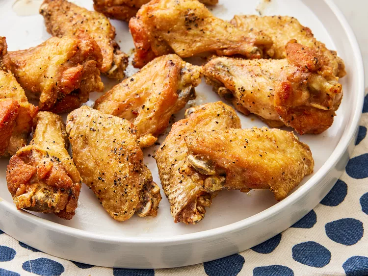

Easy Lemon-Pepper Chicken Wings

Description
We love lemon-pepper wings, especially during football season. I got tired of spending so much money on them that I decided to whip up my own version of Wingstop's lemon-pepper chicken wings. The end result was an empty platter and pleased bellies.
Ingredients
- 2 cups oil, or as needed
- 2 tablespoons extra-virgin olive oil
- 1 tablespoon lemon-pepper seasoning
- 12 chicken wings
Steps
- Gather all ingredients.
- Heat oil in a deep-fryer or large saucepan to 375 degrees F (190 degrees C).
- Stir olive oil and lemon-pepper seasoning together in a bowl; set aside.
- Fry wings in hot oil until no longer pink at the bone and the juices run clear, about 8 minutes. An instant-read thermometer inserted near the bone should read 165 degrees F (74 degrees C).
- Toss hot wings with lemon-pepper mixture to coat.
- Enjoy!